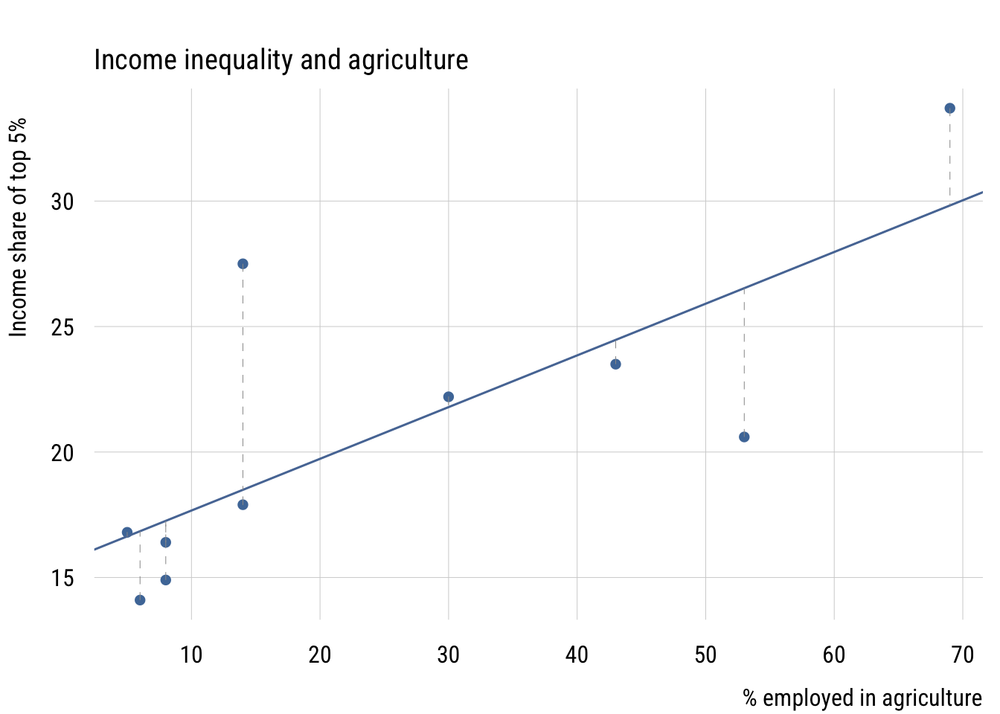
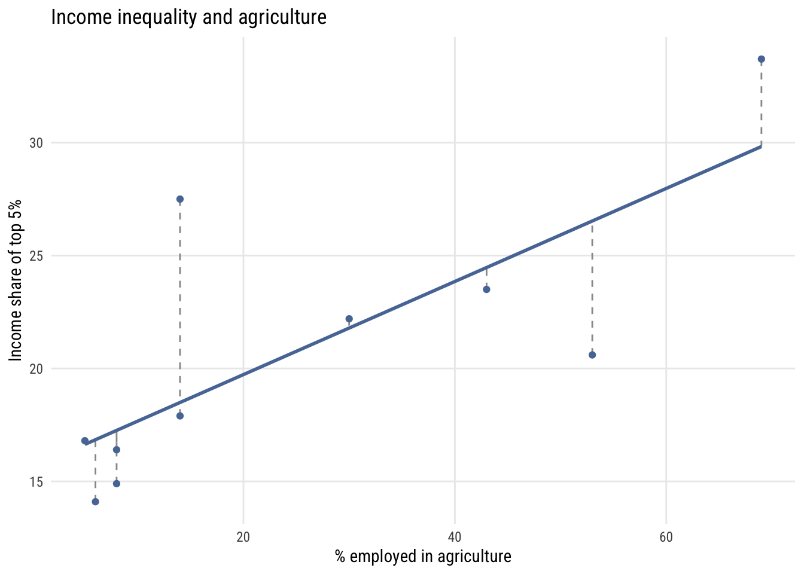

pacman::p_load(tinyplot,
ggplot2)OLS in matrix form*
Goals
The goal of this aside is to show how the algebra of ordinary least squares can be expressed compactly using matrix notation, and then to verify the result numerically in R. Understanding the matrix form will serve you well when you encounter multiple regression, generalized linear models, and most of modern applied statistics. Plus it’s kind of a rite of passage. Just let it wash over you…
Set up
tinytheme("ipsum",
family = "Roboto Condensed",
palette.qualitative = "Tableau 10",
palette.sequential = "agSunset")theme_set(
theme_minimal(base_family = "Roboto Condensed") +
theme(panel.grid.minor = element_blank())
)
tableau10 <- c("#5778a4", "#e49444", "#d1615d", "#85b6b2", "#6a9f58",
"#e7ca60", "#a87c9f", "#f1a2a9", "#967662", "#b8b0ac")
options(
ggplot2.discrete.colour = \() scale_color_manual(values = tableau10),
ggplot2.discrete.fill = \() scale_fill_manual(values = tableau10)
)Review: matrix basics
A matrix is a rectangular table of numbers arranged in rows and columns. We write matrices in bold: \(\mathbf{A}\). A matrix with \(n\) rows and \(p\) columns is called an \(n \times p\) matrix.
Two special cases come up constantly:
- A column vector is an \(n \times 1\) matrix — a single column of numbers.
- A row vector is a \(1 \times p\) matrix — a single row of numbers.
Multiplication
Two matrices can be multiplied only when they are conformable: the number of columns in the left matrix must equal the number of rows in the right matrix. If \(\mathbf{A}\) is \(n \times p\) and \(\mathbf{B}\) is \(p \times m\), then \(\mathbf{AB}\) is \(n \times m\).
Order matters: in general, \(\mathbf{AB} \neq \mathbf{BA}\).
Transpose
The transpose of a matrix, written \(\mathbf{A}'\), swaps rows and columns. If \(\mathbf{A}\) is \(n \times p\), then \(\mathbf{A}'\) is \(p \times n\). A useful fact: pre-multiplying any matrix by its own transpose, \(\mathbf{A}'\mathbf{A}\), always produces a square, symmetric matrix.
Identity and inverse
The identity matrix \(\mathbf{I}\) is the matrix equivalent of the number 1 — multiplying any conformable matrix by \(\mathbf{I}\) leaves it unchanged. It is square, with 1s on the main diagonal and 0s everywhere else:
\[ \mathbf{I} = \begin{pmatrix} 1 & 0 & 0 \\ 0 & 1 & 0 \\ 0 & 0 & 1 \end{pmatrix} \]
The inverse of a square matrix \(\mathbf{A}\) is the matrix \(\mathbf{A}^{-1}\) such that:
\[ \mathbf{A}\mathbf{A}^{-1} = \mathbf{A}^{-1}\mathbf{A} = \mathbf{I} \]
Not every square matrix has an inverse (just as you can’t divide by zero in scalar algebra), but \(\mathbf{X}'\mathbf{X}\) will have one as long as no predictor is an exact linear combination of the others.
The regression model in matrix form
N equations become one
In the simple regression case you already know, we write a separate equation for each observation \(i\):
\[ y_i = b_0 + b_1 x_i + \varepsilon_i \]
With \(n\) observations that is \(n\) separate equations. Matrix notation collapses them all into one:
\[ \mathbf{y} = \mathbf{X}\mathbf{b} + \boldsymbol{\varepsilon} \]
where \(\mathbf{y}\) is an \(n \times 1\) column vector of outcomes, \(\mathbf{X}\) is an \(n \times (p+1)\) matrix of predictors with a leading column of 1s for the intercept, \(\mathbf{b}\) is a \((p+1) \times 1\) vector of coefficients, and \(\boldsymbol{\varepsilon}\) is an \(n \times 1\) vector of errors. Expanded out, this looks like:
\[ \underbrace{\begin{pmatrix} y_1 \\ y_2 \\ \vdots \\ y_n \end{pmatrix}}_{\mathbf{y}} = \underbrace{\begin{pmatrix} 1 & x_1 \\ 1 & x_2 \\ \vdots & \vdots \\ 1 & x_n \end{pmatrix}}_{\mathbf{X}} \underbrace{\begin{pmatrix} b_0 \\ b_1 \end{pmatrix}}_{\mathbf{b}} + \underbrace{\begin{pmatrix} \varepsilon_1 \\ \varepsilon_2 \\ \vdots \\ \varepsilon_n \end{pmatrix}}_{\boldsymbol{\varepsilon}} \]
The column of 1s in \(\mathbf{X}\) is what lets the intercept \(b_0\) enter the model — multiplying \(b_0\) by 1 leaves it unchanged for every row.
Taking expectations
If we assume that errors average to zero across observations, \(\text{E}(\boldsymbol{\varepsilon}) = \mathbf{0}\), taking the conditional expectation of both sides gives:
\[ \text{E}(\mathbf{y} \mid \mathbf{X}) = \mathbf{X}\mathbf{b} \]
This is the model for the conditional mean of \(\mathbf{y}\) — the same thing we have been fitting all along, just written compactly.
Visualizing residuals
The error \(\varepsilon_i\) for each observation is the vertical distance between the observed \(y_i\) and the model’s prediction \(\hat{y}_i\). Here is what that looks like with a small dataset on income inequality and the share of employment in agriculture for 10 countries.1
1 This is part of a dataset from a class I took in 2002 (I think). The outcome is the income share of the top 5% and the predictor is the percentage of workers employed in agriculture.
Data prep
d <- data.frame(
country = c("Israel", "Canada", "Denmark", "Zambia", "Panama",
"Morocco", "Sweden", "Argentina", "Japan", "Tunisia"),
inctop5 = c(16.4, 14.1, 14.9, 33.7, 22.2, 20.6, 16.8, 27.5, 17.9, 23.5),
agpct = c(8, 6, 8, 69, 30, 53, 5, 14, 14, 43)
)
m <- lm(inctop5 ~ agpct, data = d)
d$yhat <- fitted(m)Show code
plt(inctop5 ~ agpct, data = d,
main = "Income inequality and agriculture",
xlab = "% employed in agriculture",
ylab = "Income share of top 5%")
abline(m, col = "#5778a4", lwd = 1.5)
segments(d$agpct, d$inctop5, d$agpct, d$yhat,
col = "gray60", lty = 2)
Show code
ggplot(d, aes(x = agpct, y = inctop5)) +
geom_segment(aes(xend = agpct, yend = yhat),
color = "gray60", linetype = "dashed") +
geom_smooth(method = "lm", formula = y ~ x, se = FALSE,
color = tableau10[1], linewidth = 1) +
geom_point(color = tableau10[1]) +
labs(
title = "Income inequality and agriculture",
x = "% employed in agriculture",
y = "Income share of top 5%")
Deriving the OLS estimator
An analogy
The logic of isolating \(\mathbf{b}\) is exactly analogous to solving a simple scalar equation. To solve:
\[ c = ax \]
you multiply both sides by \(a^{-1}\):
\[ a^{-1}c = a^{-1}ax = x \]
The same idea works with matrices. We want to isolate \(\mathbf{b}\) in \(\mathbf{y} = \mathbf{X}\mathbf{b}\). The complication is that \(\mathbf{X}\) is not square, so it has no inverse — we can’t divide by it directly.
The derivation
The fix is to pre-multiply both sides by \(\mathbf{X}'\). This produces the square matrix \(\mathbf{X}'\mathbf{X}\), which does have an inverse:
\[\begin{align} \mathbf{y} &= \mathbf{X}\mathbf{b} \\[4pt] \mathbf{X}'\mathbf{y} &= \mathbf{X}'\mathbf{X}\mathbf{b} \\[4pt] (\mathbf{X}'\mathbf{X})^{-1}\mathbf{X}'\mathbf{y} &= (\mathbf{X}'\mathbf{X})^{-1}\mathbf{X}'\mathbf{X}\mathbf{b} \\[4pt] (\mathbf{X}'\mathbf{X})^{-1}\mathbf{X}'\mathbf{y} &= \mathbf{b} \end{align}\]
The last step uses the fact that \((\mathbf{X}'\mathbf{X})^{-1}(\mathbf{X}'\mathbf{X}) = \mathbf{I}\), and \(\mathbf{I}\mathbf{b} = \mathbf{b}\). The result is the OLS estimator:
\[ \boxed{\mathbf{b} = (\mathbf{X}'\mathbf{X})^{-1}\mathbf{X}'\mathbf{y}} \]
This formula works whether you have 1 predictor or 100. Adding more predictors just adds columns to \(\mathbf{X}\) — the formula itself stays the same.
A worked example
Let’s compute \(\mathbf{b}\) step by step using the 10-country dataset.
First, set up the \(\mathbf{y}\) vector and the \(\mathbf{X}\) matrix. The constant column of 1s is created with cbind():
y <- matrix(d$inctop5, ncol = 1)
X <- cbind(1, d$agpct)Step 1: Compute \(\mathbf{X}'\) (the transpose of \(\mathbf{X}\)):
XT <- t(X)
XT [,1] [,2] [,3] [,4] [,5] [,6] [,7] [,8] [,9] [,10]
[1,] 1 1 1 1 1 1 1 1 1 1
[2,] 8 6 8 69 30 53 5 14 14 43Step 2: Compute \(\mathbf{X}'\mathbf{X}\), which is \(2 \times 2\) here:
XTX <- XT %*% X
XTX [,1] [,2]
[1,] 10 250
[2,] 250 10900Step 3: Compute \(\mathbf{X}'\mathbf{y}\) (apply the same pre-multiplication to the right-hand side):
XTy <- XT %*% y
XTy [,1]
[1,] 207.6
[2,] 6148.2Step 4: Compute \((\mathbf{X}'\mathbf{X})^{-1}\). In R, solve() inverts a matrix:
invXTX <- solve(XTX)
invXTX [,1] [,2]
[1,] 0.234408602 -0.0053763441
[2,] -0.005376344 0.0002150538Step 5: Multiply to get \(\mathbf{b} = (\mathbf{X}'\mathbf{X})^{-1}\mathbf{X}'\mathbf{y}\):
b <- invXTX %*% XTy
b [,1]
[1,] 15.6083871
[2,] 0.2060645Verify with lm()
These should match exactly what lm() returns:
lm(inctop5 ~ agpct, data = d)
Call:
lm(formula = inctop5 ~ agpct, data = d)
Coefficients:
(Intercept) agpct
15.6084 0.2061 They do. The intercept and slope we derived by hand are identical to R’s built-in linear model.2
2 The only “trick” in all of this is computing the inverse \((\mathbf{X}'\mathbf{X})^{-1}\), which becomes numerically involved for larger matrices. Everything else — the transpose, the multiplications — is straightforward even by hand. This is also why lm() doesn’t actually use this formula internally: matrix inversion is numerically unstable for ill-conditioned \(\mathbf{X}'\mathbf{X}\). In practice, R uses QR decomposition instead, which is more stable. But the formula \(\mathbf{b} = (\mathbf{X}'\mathbf{X})^{-1}\mathbf{X}'\mathbf{y}\) remains the clearest way to understand what OLS is doing.